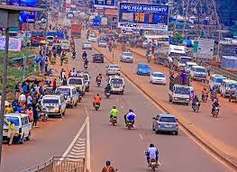
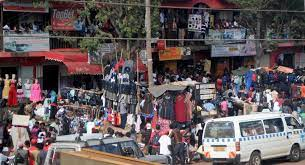
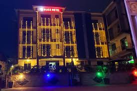
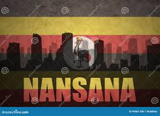
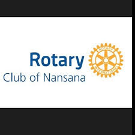

Eco bank Uganda
Finance Instution
Member sisnce: 2020
Bronze membership
https://www.ecobank.com/ugAirtel Uganda
Telecom company
Member sisnce: 2015
Silver membership
https://airtel.africa/Sozo property consultant Ltd
household
Member sisnce: 2019
Golod membership
Sozo property consultant Ltd
household
Member sisnce: 2019
Golod membership
Sozo property consultant Ltd
household
Member sisnce: 2019
Golod membership
Discover Nansana
Demographic Data:
Nansana Municipality is one of the major urban Local Governments within Wakiso District. The Municipality attained this status under statutory instrument 2015 No. 47 on 9th day of September 2015. The then existing Nansana Town Council was expanded in boundaries to annex Nabweru , Gombe and Busukuma Sub-counties to form a new Local Council at the Level of LCIV and thus took the Name of the existing Town Council, which is Nansana.Nansana Municipality is located in Wakiso District within in the Central Region of Uganda. It is about 9.6km (6 miles) from the centre of Kampala, the capital City of Uganda on (Kampala-Hoima Road). It covers an area of 295.3 sq km
Economic Strength:
Trade, Industry, and Local Economic Development Department This department aims at providing leadership, technical support, and guidance for the delivery of quality economic services in the municipality; and this is done by implementing guidelines and policies on trade, industry, tourism & cooperatives among others.
Education:
The Municipality is served by a good network of primary and secondary schools. Among the secondary schools in Nansana are Nansana Secondary School and Nansana Technical Secondary School as well as a number of private schools. Teachers in this municipality also benefit from the government-sponsored training and capacity building programmes.
Outdoor Paradise:
Over the years, the Nansana Scouts has left a significant mark on the lives of countless young people in the Nansana Municipality. The Nansana Scouts is a dynamic and community-driven youth organization situated in the Nansana Municipality of Wakiso District, Uganda. Dedicated to nurturing the potential of young individuals, this organization offers a variety of programs that foster personal growth, leadership development , and a strong sense of community engagement. Inclusivity is a foundational value of the Nansana Scouts. We’re committed to welcoming youth from all walks of life, irrespective of gender, ethnicity, or socioeconomic background. By cultivating a safe and inclusive environment, and ensures that every young person has the opportunity to thrive and make a positive impact.
Arts and Culture:
Nansana's annual festivals and exhibitions are organised by the local government. The year 2020 saw the launch of Nansana Cultural Centre, promoting culture through various programmes, film shows, discussions, and exhibitions
Waste Management :
Nansana is committed to protecting the environment. The municipality has initiated a waste management campaign to involve the community in combating the challenges posed by solid waste. Through this campaign, the local government has been able to reduce the amount of waste in the area by encouraging efficient waste disposal, recycling, and composting.
Infrastructure :
Nansana is improving its infrastructure to improve the quality of life of its people. The municipality is connected to electricity, has a good network of roads and bridges, and is served by water and sanitation services. Improving the infrastructure in the municipality is one of the top priorities of the local government.
Sports :
Nansana Municipality is also home to several sporting activities. The most notable are football, netball, volleyball, rugby, and cricket. The municipality is home to the Nansana All Arond Club, a multi-sport club that participates in many domestic and international tournaments.




